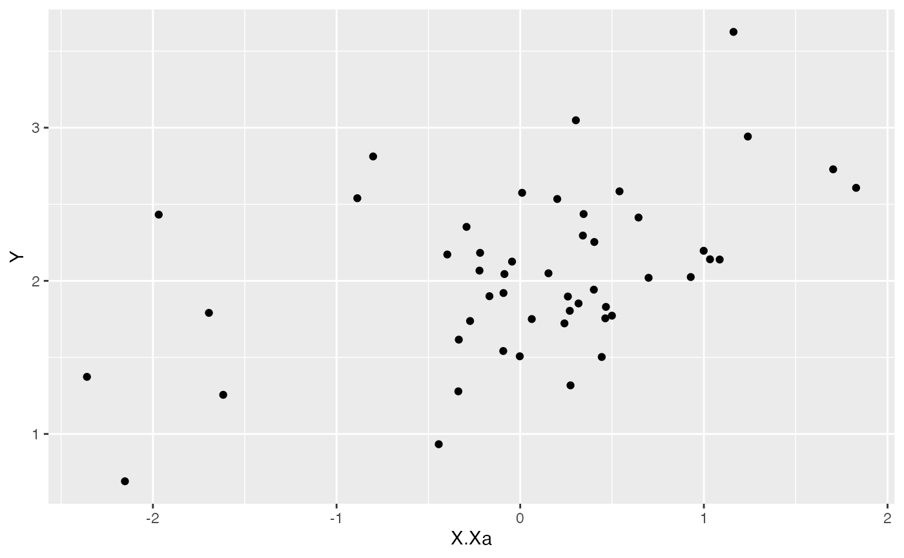

Here I walk you through the basic models of Blouch. By basic I mean either the direct effect model, adaptive model, or model with a combination of both types of predictors. This article is an abbreviated versions of the Simulation Example article - most of the steps of analysis will be the same and are not repeated here. Note that the Stan runs are also too few iterations and use only 1 chain and 1 core.
Direct effect model
Blouch implements the model of constrained evolution (Hansen & Bartoszek, 2012) known as the direct effect model, previously implemented in Grabowski et al. (2016; see also Grabowski et al. 2023), which can be used to test for allometric constraints.
Create Phylogeny
The Blouch package includes the primate phylogeny from the 10KTrees Project (Arnold et al. 2010), which is used for various simulations and comes from https://10ktrees.nunn-lab.org/. This is Version 3 of their primate phylogeny with 301 tips. Here we randomly reduce the tip number to 100 for a more manageable tree using functions from the ape R package (Paradis et al. 2004)
########################################################################################################
#Create phylogeny
########################################################################################################
N<-50 #Number of species
set.seed(10) #Set seed to get same random species each time
phy <- ape::keep.tip(tree.10K,sample(tree.10K$tip.label)[1:N])
phy<-ape::multi2di(phy)
l.tree<-max(ape::branching.times(phy)) ## rescale tree to height 1
phy$edge.length<-phy$edge.length/l.tree
tip.label<-phy$tip.labelSet true/known parameter values
Next we set our true/known parameter values. These are for the half-life (hl), and stationary variance (vy), which in our simulation we translate to \(\alpha\) (a) and \(\sigma^2_y\) (sigma2_y). We set the ancestral value at the root (vX0) to 0, and the instantaneous variance of the BM process (Sxx) to to 10.
########################################################################################################
#Direct Effect Model
########################################################################################################
#Setup parameters
Z_direct<-1 #Number of traits
hl<-0.1 #half life
a<-log(2)/hl
vy<-0.01 #0.25,0.5 - testing options
sigma2_y<-vy*(2*(log(2)/hl));
vX0<-0 #value for ancestral state at the root node.
vY0 <- 0 #value for ancestral state at the root node.
Sxx<-10 #Variance of BM processCalculate V and simulate X data
We will use the Blouch helper R function calc_direct_V to calculate the direct effect variance/covariance matrix, and the fastBM function from phytools (Revell, 2011) to simulate the X variable following a BM process.
V<-calc_direct_V(phy,sigma2_y,a) #Calculate V - variance/covariance matrix
X<-phytools::fastBM(phy,a=vX0,sig2=Sxx,internal=FALSE) #Simulate X BM variable on tree, with scaling 10
phytools::phenogram(phy,X,spread.labels=TRUE,spread.cost=c(1,0)) #Plot X data
#> Optimizing the positions of the tip labels...Simulate Y data
Next we set the intercept and slope parameters, and simulate mu before using it and V to simulate Y. Finally we make a quick plot of the results. We will set the intercept (alpha term) to 2 and the slope to 0.25.
alpha<-2 #Intecept
beta<-0.25 #Slope
mu<-alpha+X*beta #Simulate mu for Y
Y<-MASS::mvrnorm(n=1,mu,V) #Simulate direct effect Y trait
df<-data.frame(Y=Y,X=X)
names(df)<-c("Y","X")
ggplot2::ggplot(data=df,ggplot2::aes(x=X,y=Y))+
ggplot2::geom_point()
summary(lm(Y~X,df))
#>
#> Call:
#> lm(formula = Y ~ X, data = df)
#>
#> Residuals:
#> Min 1Q Median 3Q Max
#> -0.244026 -0.069756 0.007519 0.073226 0.211013
#>
#> Coefficients:
#> Estimate Std. Error t value Pr(>|t|)
#> (Intercept) 2.012890 0.016976 118.58 <2e-16 ***
#> X 0.255071 0.004838 52.72 <2e-16 ***
#> ---
#> Signif. codes: 0 '***' 0.001 '**' 0.01 '*' 0.05 '.' 0.1 ' ' 1
#>
#> Residual standard error: 0.1067 on 48 degrees of freedom
#> Multiple R-squared: 0.983, Adjusted R-squared: 0.9827
#> F-statistic: 2779 on 1 and 48 DF, p-value: < 2.2e-16Simulating measurement error
Next we will simulate measurement error - we will use a standard deviation of measurement error of 0.01, which we will provide to Blouch as a vector (X_error and Y_error), and use the rnorm function to add error to our X and Y variables. In other words, we are telling Blouch that the estimated error on X and Y is 0.01, and providing it with X and Y variables that are offset by a random amount of error with this standard deviation.
Combine data and tree
Next we will use the treeplyr package (Uyeda and Harmon, 2014) make.treedata function to combine the data and tree based on the taxa names. See https://github.com/uyedaj/treeplyr for more on this package.
############################################################################################################
#Make trdata file
trait.data<-data.frame(cbind(Y_with_error,Y_error,X_with_error,X_error))
trdata<-treeplyr::make.treedata(phy,trait.data)Data setup for Blouch
We will use the helper function blouch.direct.prep to setup the dat file for Stan. Here the name of the column in trdata$dat that contains the response variable is “Y_with_error”, the associated error column name is “Y_error,” the direct effect predictor column is named “X_with_error”, and its associated errors is “X_error”. Finally, we give the heloper function the number of predictor traits, 1 here.
############################################################################################################
#Test Blouch prep code - direct effect model - blouch.direct.prep()
dat<-blouch.direct.prep(trdata,"Y_with_error","Y_error","X_with_error","X_error",Z_direct=Z_direct)Exploring Priors
At this point one would want to explore if the priors are appropriate - see Simulation Example article for one way to go about this.
Running models
We will run the direct effect model first. Below are the priors used for this simulation. See Grabowski (in revision) for more on setting these priors. To change these values requires you to open the Stan function, in this case blouchOU_direct, and manually edit them. Unfortunately there is no way around this at present, but trust me - it will be worth it.
For example, here are the four most important priors for the model below - these values are explored in Grabowski (in revision). Remember, always do prior predictive simulations first - in other words, look at distributions of the values and see if they are actually biologically possible - see the exploring priors step above.
########################################################################################################
#Priors
#hl ~ lognormal(log(0.25),0.25);
#vy ~ exponential(10);
#alpha ~ normal(2.0,0,75);
#beta ~ normal(0.25,1.5);And here are the lines of Stan code for setting these priors. To change the values to make them appropriate for your own analyses, you just need to change the numbers below. All Stan programs are in the Blouch/inst/stan folder and named according to the model they run. See Table S1 of Grabowski (in revision) for more on the models. Remember, your priors should be based on what you know about the biological processes underlying your research question and prior predictive simulations (see McElreath 2020)
#Stan Code
target += lognormal_lpdf(hl|log(0.25),0.25);
target += exponential_lpdf(vy|10);
target += normal_lpdf(alpha|2.0,0.75);
target += normal_lpdf(beta|0.25,1.5);Now let’s run the direct effect model blouchOU_direct.
fit.direct<- rstan::sampling(object = blouch:::stanmodels$blouchOU_direct,data = dat,chains = 1,cores=1,iter =400)
#> Warning: The largest R-hat is NA, indicating chains have not mixed.
#> Running the chains for more iterations may help. See
#> https://mc-stan.org/misc/warnings.html#r-hat
#> Warning: Bulk Effective Samples Size (ESS) is too low, indicating posterior means and medians may be unreliable.
#> Running the chains for more iterations may help. See
#> https://mc-stan.org/misc/warnings.html#bulk-ess
#> Warning: Tail Effective Samples Size (ESS) is too low, indicating posterior variances and tail quantiles may be unreliable.
#> Running the chains for more iterations may help. See
#> https://mc-stan.org/misc/warnings.html#tail-essNow let’s look at the results
print(fit.direct,pars = c("hl","vy","alpha","beta"))
#> Inference for Stan model: blouchOU_direct.
#> 1 chains, each with iter=400; warmup=200; thin=1;
#> post-warmup draws per chain=200, total post-warmup draws=200.
#>
#> mean se_mean sd 2.5% 25% 50% 75% 97.5% n_eff Rhat
#> hl 0.24 0 0.06 0.15 0.20 0.23 0.27 0.35 312 1
#> vy 0.02 0 0.00 0.01 0.01 0.02 0.02 0.03 303 1
#> alpha 1.99 0 0.04 1.91 1.97 1.99 2.02 2.08 460 1
#> beta[1] 0.26 0 0.01 0.24 0.25 0.26 0.26 0.27 460 1
#>
#> Samples were drawn using NUTS(diag_e) at Sun Sep 24 19:00:42 2023.
#> For each parameter, n_eff is a crude measure of effective sample size,
#> and Rhat is the potential scale reduction factor on split chains (at
#> convergence, Rhat=1).
#plot(rethinking::precis(fit.direct,depth=3,pars = c("hl","vy","alpha","beta"))) #For use with rethinking package
post<-rstan::extract(fit.direct) #Extract posterior distributionFrom there the posteriors should be explored, compared to the priors, etc. See the Simulation Example for one example of how to do this.
Adaptive Model
Blouch also implements the model of adaptive evolution introduced by Hansen et al. (2008). Here the response variable evolves according to an Ornstein-Uhlenbeck process towards an optimal state that is modeled as a function of the predictor variable. Most of these steps below are similar to those above for the direct effect model so I will not go into them fully.
Again, we will create a phylogeny by randomly sampling from the 10K Trees phylogeny.
########################################################################################################
#Create phylogeny
########################################################################################################
N<-50 #Number of species
set.seed(10) #Set seed to get same random species each time
phy <- ape::keep.tip(tree.10K,sample(tree.10K$tip.label)[1:N])
phy<-ape::multi2di(phy)
l.tree<-max(ape::branching.times(phy)) ## rescale tree to height 1
phy$edge.length<-phy$edge.length/l.tree
tip.label<-phy$tip.labelSet true/known parameter values
First we will simulate X and Y data using a generative model for the adaptive model.
We will set our true/known parameter values. These are for the half-life (hl), and stationary variance (vy), which in our simulation we translate to \(\alpha\) (a) and \(\sigma^2_y\) (sigma2_y). We set the ancestral value at the root (vX0) to 0, and the instantaneous variance of the BM process (Sxx) to to 10.
########################################################################################################
#Adaptive Model
########################################################################################################
#Setup parameters
Z_adaptive<-1 #Number of traits
hl<-0.1
a<-log(2)/hl
vy<-0.1 #0.25,0.5 - testing options
sigma2_y<-vy*(2*(log(2)/hl));
vX0<-0 #value for ancestral state at the root node.
vY0<-0#value for ancestral state at the root node.We will use the the fastBM function from phytools (Revell, 2011) to simulate the X variable following a BM process. Because this is a simulation we are setting the instantaneous variance of the BM process (sigma2_x) to 1, which needs to be in matrix format. Normally Blouch estimates this as part of the blouch.adapt.prep helper function.
sigma2_x<-matrix(1,1,1) #Variance of BM Process
X<-phytools::fastBM(phy,a=vX0,sig2=sigma2_x[1,1],internal=FALSE) #Simulate X BM variable on tree, with scaling 10
phytools::phenogram(phy,X,spread.labels=TRUE,spread.cost=c(1,0)) #Plot X data
#> Optimizing the positions of the tip labels...
Calculate V and simulate Y data
We will set the intercept (alpha) to 2 and the slope to 0.25. We will use the Blouch helper functions calc_adaptive_dmX to calculate the design matrix and calc_adaptive_V to calculate the variance/covariance matrix.
Then we will simulate mu before using it and V to simulate Y. Finally we make a quick plot of the results.
alpha<-2 #Intecept
beta<-0.25 #Slope
dmX<-calc_adaptive_dmX(phy,a,X) #Calculate the design matrix
V<-calc_adaptive_V(phy,a, sigma2_y, beta, sigma2_x, Z_adaptive) #Calculate adaptive variance/covariance matrix
mu<-alpha+dmX%*%beta #Simulate mu for Y
Y<-MASS::mvrnorm(n=1,mu,V) #Simulate adaptive model Y trait
df<-data.frame(Y=Y,X=X)
names(df)<-c("Y","X")
ggplot2::ggplot(data=df,ggplot2::aes(x=X,y=Y))+
ggplot2::geom_point()
summary(lm(Y~X,df))
#>
#> Call:
#> lm(formula = Y ~ X, data = df)
#>
#> Residuals:
#> Min 1Q Median 3Q Max
#> -0.77740 -0.27795 -0.00472 0.26880 0.79108
#>
#> Coefficients:
#> Estimate Std. Error t value Pr(>|t|)
#> (Intercept) 1.91334 0.05316 35.993 < 2e-16 ***
#> X 0.17356 0.04791 3.623 0.000702 ***
#> ---
#> Signif. codes: 0 '***' 0.001 '**' 0.01 '*' 0.05 '.' 0.1 ' ' 1
#>
#> Residual standard error: 0.334 on 48 degrees of freedom
#> Multiple R-squared: 0.2147, Adjusted R-squared: 0.1983
#> F-statistic: 13.12 on 1 and 48 DF, p-value: 0.0007023Simulating measurement error
Next we will simulate measurement error - we will use a standard deviation of measurement error of 0.01, which we will provide to Blouch as a vector (X_error and Y_error), and use the rnorm function to add error to our X and Y variables. In other words, we are telling Blouch that the estimated error on X and Y is 0.01, and providing it with X and Y variables that are offset by a random amount of error with this standard deviation.
Data setup for Blouch
Next we will use the treeplyr package (Uyeda and Harmon, 2014) make.treedata function to combine the data and tree based on the taxa names. See https://github.com/uyedaj/treeplyr for more on this package.
############################################################################################################
#Make trdata file
trait.data<-data.frame(cbind(Y_with_error,Y_error,X_with_error,X_error))
trdata<-treeplyr::make.treedata(phy,trait.data)
############################################################################################################We will use the helper function blouch.adapt.prep() to setup the dat file for Stan. Here the name of the column in trdata$dat that contains the response variable is “Y_with_error”, the associated error column name is “Y_error,” the direct effect predictor column is named “X_with_error”, and its associated errors is “X_error”. Finally, we give the helper function the number of predictor traits, 1 here.
#Test Blouch prep code - adaptive model
dat<-blouch.adapt.prep(trdata,"Y_with_error","Y_error","X_with_error","X_error",Z_adaptive=Z_adaptive)Exploring Priors
At this point one would want to explore if the priors are appropriate - see Simulation Example article for one way to go about this.
Running models
Below are the priors used for this simulation. See Grabowski (in revision) for more on setting these priors. To change these values requires you to open the Stan function, in this case blouchOU_direct, and manually edit them. Unfortunately there is no way around this at present, but trust me - it will be worth it.
For example, here are the four most important priors for the model below - these values are explored in Grabowski (in revision). Remember, always do prior predictive simulations first - in other words, look at distributions of the values and see if they are actually biologically possible - see the exploring priors step above.
########################################################################################################
#Priors
#hl ~ lognormal(log(0.25),0.25);
#vy ~ exponential(5);
#alpha ~ normal(2.0,0,2);
#beta ~ normal(0.25,0.1); And here are the lines of Stan code for setting these priors. To change the values to make them appropriate for your own analyses, you just need to change the numbers below. All Stan programs are in the Blouch/inst/stan folder and named according to the model they run. See Table S1 of Grabowski (in revision) for more on the models. Remember, your priors should be based on what you know about the biological processes underlying your research question and prior predictive simulations (see McElreath 2020).
#Stan Code
target += lognormal_lpdf(hl|log(0.25),0.25);
target += exponential_lpdf(vy|5);
target += normal_lpdf(alpha|2,0.2);
target += normal_lpdf(beta|0.25,0.1);Now let’s run the adaptive model blouchOU_adapt
fit.adapt<- rstan::sampling(object = blouch:::stanmodels$blouchOU_adapt,data = dat,chains = 1,cores=1,iter =400)
#> Warning: The largest R-hat is NA, indicating chains have not mixed.
#> Running the chains for more iterations may help. See
#> https://mc-stan.org/misc/warnings.html#r-hat
#> Warning: Bulk Effective Samples Size (ESS) is too low, indicating posterior means and medians may be unreliable.
#> Running the chains for more iterations may help. See
#> https://mc-stan.org/misc/warnings.html#bulk-ess
#> Warning: Tail Effective Samples Size (ESS) is too low, indicating posterior variances and tail quantiles may be unreliable.
#> Running the chains for more iterations may help. See
#> https://mc-stan.org/misc/warnings.html#tail-essHere the results include both the optimal regression, beta, and the evolutionary regression, beta_e, following Hansen et al. (2008)
print(fit.adapt,pars = c("hl","vy","alpha","beta","beta_e"))
#> Inference for Stan model: blouchOU_adapt.
#> 1 chains, each with iter=400; warmup=200; thin=1;
#> post-warmup draws per chain=200, total post-warmup draws=200.
#>
#> mean se_mean sd 2.5% 25% 50% 75% 97.5% n_eff Rhat
#> hl 0.22 0.00 0.05 0.14 0.18 0.21 0.24 0.33 100 1.01
#> vy 0.17 0.00 0.04 0.11 0.15 0.17 0.20 0.27 169 1.00
#> alpha 1.97 0.01 0.10 1.80 1.90 1.98 2.04 2.16 56 1.01
#> beta[1] 0.18 0.02 0.08 0.05 0.12 0.16 0.23 0.35 16 1.00
#> beta_e[1] 0.12 0.01 0.06 0.03 0.08 0.11 0.16 0.27 17 1.00
#>
#> Samples were drawn using NUTS(diag_e) at Sun Sep 24 19:00:55 2023.
#> For each parameter, n_eff is a crude measure of effective sample size,
#> and Rhat is the potential scale reduction factor on split chains (at
#> convergence, Rhat=1).
#plot(rethinking::precis(fit.adapt,depth=2,pars = c("hl","vy","alpha","beta")))
post<-rstan::extract(fit.adapt)From there the posteriors should be explored, compared to the priors, etc. See the Simulation Example for one example of how to do this.
Direct effect and adaptive models
Finally, we can look at models that are a combination of direct effect and adaptive traits. Setup is similar to above except here we have two predictors.
First we will create a phylogeny by randomly sampling from the 10K Trees phylogeny
########################################################################################################
#Create phylogeny
########################################################################################################
N<-50 #Number of species
set.seed(10) #Set seed to get same random species each time
phy <- ape::keep.tip(tree.10K,sample(tree.10K$tip.label)[1:N])
phy<-ape::multi2di(phy)
l.tree<-max(ape::branching.times(phy)) ## rescale tree to height 1
phy$edge.length<-phy$edge.length/l.tree
tip.label<-phy$tip.labelSet true/known parameter values
We will simulate X and Y data using a generative model for the direct effect and adaptive model. Here we will have 1 direct effect trait, Xd, and one adaptive trait, Xa. An object Z always refers to the number of traits, in this case Z_direct = number of direct effect traits, and Z_adaptive = number of adaptive traits. Because this is a simulation we are setting the instantaneous variance of the BM process (sigma2_x) to 1, which needs to be in matrix format. Normally Blouch estimates this as part of the blouch.direct.adapt.prep helper function.
############################################################################################################
#Direct effect + Adaptive Model
############################################################################################################
hl<-0.1 #0.1, 0.25, 0.75 - testing options
a<-log(2)/hl
vy<-0.01 #0.25,0.5 - testing options
sigma2_y<-vy*(2*(log(2)/hl));
vX0<-0
vY0 <- 0
Z_direct<-1
Z_adaptive<-1
Z<-Z_direct+Z_adaptive
sigma2_x<-matrix(1,1,1) #Variance of BM Process
Xd<-rnorm(N,0,1)
names(Xd)<-phy$tip.label
phytools::phenogram(phy,Xd,spread.labels=TRUE,spread.cost=c(1,0)) #Plot X data
#> Optimizing the positions of the tip labels...
Xa<-phytools::fastBM(phy,a=vX0,sig2=sigma2_x[1,1],internal=FALSE) #Simulate X BM variable on tree, with scaling 10
phytools::phenogram(phy,Xa,spread.labels=TRUE,spread.cost=c(1,0)) #Plot X data
#> Optimizing the positions of the tip labels...
#sigma2_x<-ratematrix(phy,Xa) #Calculate evolutionary v/cv matrix
Xs<-cbind(Xd,Xa)We will have one intercept term here, but two slopes - the order in Blouch is always direct effect predictors first, followed by adaptive predictors. Thus the direct effect slope will be 0.35 and the adaptive slope will be 0.25. Except for the Blouch helper function calc_mixed_dmX, which is used when there are mixed design matrices, the other functions are the same as the adaptive model above. One complication is the beta term below in the calc_adaptive_V function call - we are sending this function only the adaptive slope and the line beta[(Z_direct+1):(Z_adaptive+Z_direct)] is one way of specifying only that term.
Finally we make a quick plot of the results.
alpha<-2 #Intecept
beta<-c(0.35,0.25) #Slopes
dmX<-calc_mixed_dmX(phy,a,Xs,Z_direct,Z_adaptive)
mu<-alpha+dmX%*%beta #Simulate mu for Y
V<-calc_adaptive_V(phy,a, sigma2_y, beta[(Z_direct+1):(Z_adaptive+Z_direct)], sigma2_x)
Y<-MASS::mvrnorm(n=1,mu,V)
df<-data.frame(Y=Y,X=Xs)
summary(lm(Y~Xs,df))
#>
#> Call:
#> lm(formula = Y ~ Xs, data = df)
#>
#> Residuals:
#> Min 1Q Median 3Q Max
#> -0.226807 -0.077535 -0.000499 0.055419 0.189201
#>
#> Coefficients:
#> Estimate Std. Error t value Pr(>|t|)
#> (Intercept) 1.98088 0.01400 141.51 <2e-16 ***
#> XsXd 0.34453 0.01026 33.58 <2e-16 ***
#> XsXa 0.23978 0.01598 15.00 <2e-16 ***
#> ---
#> Signif. codes: 0 '***' 0.001 '**' 0.01 '*' 0.05 '.' 0.1 ' ' 1
#>
#> Residual standard error: 0.09835 on 47 degrees of freedom
#> Multiple R-squared: 0.9686, Adjusted R-squared: 0.9672
#> F-statistic: 724 on 2 and 47 DF, p-value: < 2.2e-16
ggplot2::ggplot(data=df,ggplot2::aes(x=X.Xd,y=Y))+
ggplot2::geom_point()
summary(lm(Y~X.Xd,df))
#>
#> Call:
#> lm(formula = Y ~ X.Xd, data = df)
#>
#> Residuals:
#> Min 1Q Median 3Q Max
#> -0.56393 -0.12628 0.00925 0.17768 0.45689
#>
#> Coefficients:
#> Estimate Std. Error t value Pr(>|t|)
#> (Intercept) 1.99274 0.03327 59.90 <2e-16 ***
#> X.Xd 0.35755 0.02434 14.69 <2e-16 ***
#> ---
#> Signif. codes: 0 '***' 0.001 '**' 0.01 '*' 0.05 '.' 0.1 ' ' 1
#>
#> Residual standard error: 0.2341 on 48 degrees of freedom
#> Multiple R-squared: 0.8181, Adjusted R-squared: 0.8143
#> F-statistic: 215.8 on 1 and 48 DF, p-value: < 2.2e-16
ggplot2::ggplot(data=df,ggplot2::aes(x=X.Xa,y=Y))+
ggplot2::geom_point()
summary(lm(Y~X.Xa,df))
#>
#> Call:
#> lm(formula = Y ~ X.Xa, data = df)
#>
#> Residuals:
#> Min 1Q Median 3Q Max
#> -0.96493 -0.30501 -0.07747 0.24245 1.26987
#>
#> Coefficients:
#> Estimate Std. Error t value Pr(>|t|)
#> (Intercept) 2.02455 0.06894 29.36 < 2e-16 ***
#> X.Xa 0.28516 0.07879 3.62 0.000709 ***
#> ---
#> Signif. codes: 0 '***' 0.001 '**' 0.01 '*' 0.05 '.' 0.1 ' ' 1
#>
#> Residual standard error: 0.4865 on 48 degrees of freedom
#> Multiple R-squared: 0.2144, Adjusted R-squared: 0.198
#> F-statistic: 13.1 on 1 and 48 DF, p-value: 0.0007088Next we will simulate measurement error - we will use a standard deviation of measurement error of 0.01, which we will provide to Blouch as a vector (X_error and Y_error), and use the rnorm function to add error to our X and Y variables. In other words, we are telling Blouch that the estimated error on X and Y is 0.01, and providing it with X and Y variables that are offset by a random amount of error with this standard deviation. The complication here is we are simulating error in more than one trait - both an adaptive and direct effect trait - the extra lines of code below do this.
########################################################################################################
#Simulate errors - for use with blouchOU_reg_direct_adaptive_ME
Z_X_error<-2 #Number of X traits with error
X_error<-matrix(0.01,nrow=N,ncol=Z_X_error)
X_error<-data.frame(X_error)
names(X_error)<-c("Xd_error","Xa_error")
Y_error<-rep(0.01,N)
Y_with_error<-Y+rnorm(N,0,0.01)
X_with_error<-apply(Xs,2,function(X){X+rnorm(N,0,0.01)})Data setup for Blouch
Next we will use the treeplyr package (Uyeda and Harmon, 2014) make.treedata function to combine the data and tree based on the taxa names. See https://github.com/uyedaj/treeplyr for more on this package.
############################################################################################################
#Make trdata file
#trdata<-make.treedata(phy,trait.data)
trait.data<-data.frame(cbind(Y_with_error,Y_error,X_with_error,X_error))
trdata<-treeplyr::make.treedata(phy,trait.data)We will use the helper function blouch.direct.adapt.prep to setup the dat file for Stan. Here the names of the direct effect and adaptive columns are Xd, and Xa and their associated errors, with Z_direct and Z_adaptive the number of direct effect and adaptive traits, respectively.
############################################################################################################
#Test Blouch prep code - Direct effect + Adaptive Model
dat<-blouch.direct.adapt.prep(trdata,"Y_with_error","Y_error",c("Xd","Xa"),c("Xd_error","Xa_error"),Z_direct=1,Z_adaptive=1)Priors are set as above, and the blouchOU_direct_adapt model is run here.
fit.direct.adapt<- rstan::sampling(object = blouch:::stanmodels$blouchOU_direct_adapt,data = dat,chains = 1, cores=1,iter =400)
#> Warning: The largest R-hat is NA, indicating chains have not mixed.
#> Running the chains for more iterations may help. See
#> https://mc-stan.org/misc/warnings.html#r-hat
#> Warning: Bulk Effective Samples Size (ESS) is too low, indicating posterior means and medians may be unreliable.
#> Running the chains for more iterations may help. See
#> https://mc-stan.org/misc/warnings.html#bulk-ess
#> Warning: Tail Effective Samples Size (ESS) is too low, indicating posterior variances and tail quantiles may be unreliable.
#> Running the chains for more iterations may help. See
#> https://mc-stan.org/misc/warnings.html#tail-essHere the results include, in order, the direct effect regression, the optimal regression, and finally beta_e, the evolutionary regression, following Hansen et al. (2008)
print(fit.direct.adapt,pars = c("hl","vy","alpha","beta"))
#> Inference for Stan model: blouchOU_direct_adapt.
#> 1 chains, each with iter=400; warmup=200; thin=1;
#> post-warmup draws per chain=200, total post-warmup draws=200.
#>
#> mean se_mean sd 2.5% 25% 50% 75% 97.5% n_eff Rhat
#> hl 0.22 0 0.05 0.14 0.18 0.22 0.25 0.34 279 1.00
#> vy 0.01 0 0.00 0.00 0.00 0.01 0.01 0.02 141 1.00
#> alpha 1.99 0 0.04 1.92 1.96 1.99 2.01 2.06 179 1.00
#> beta[1] 0.34 0 0.01 0.33 0.34 0.34 0.35 0.36 287 1.00
#> beta[2] 0.34 0 0.04 0.27 0.31 0.34 0.36 0.42 84 1.01
#>
#> Samples were drawn using NUTS(diag_e) at Sun Sep 24 19:01:12 2023.
#> For each parameter, n_eff is a crude measure of effective sample size,
#> and Rhat is the potential scale reduction factor on split chains (at
#> convergence, Rhat=1).
#plot(rethinking::precis(fit.direct.adapt,depth=2,pars = c("hl","vy","alpha","beta")))
post<-rstan::extract(fit.direct.adapt)From there the posteriors should be explored, compared to the priors, etc. See the Simulation Example for one example of how to do this.
References
Grabowski M., Voje K.L., Hansen T.F. 2016. Evolutionary modeling and correcting for observation error support a 3/5 brain-body allometry for primates. J. Hum. Evol. 94:106–116.
Grabowski M., Kopperud B.T., Tsuboi M., Hansen T.F. 2023. Both Diet and Sociality Affect Primate Brain-Size Evolution. Systematic Biology.:syac075.
Hansen T.F., Bartoszek K. 2012. Interpreting the evolutionary regression: the interplay between observational and biological errors in phylogenetic comparative studies. Syst Biol. 61:413–425.
McElreath R. 2020. Statistical rethinking: A Bayesian course with examples in R and Stan. CRC press.
Revell L.J. 2011. phytools: an R package for phylogenetic comparative biology (and other things). Methods Ecol. Evol. 3:217–223.
Uyeda J.C., Harmon L.J. 2014. A Novel Bayesian Method for Inferring and Interpreting the Dynamics of Adaptive Landscapes from Phylogenetic Comparative Data. Systematic Biology. 63:902–918.